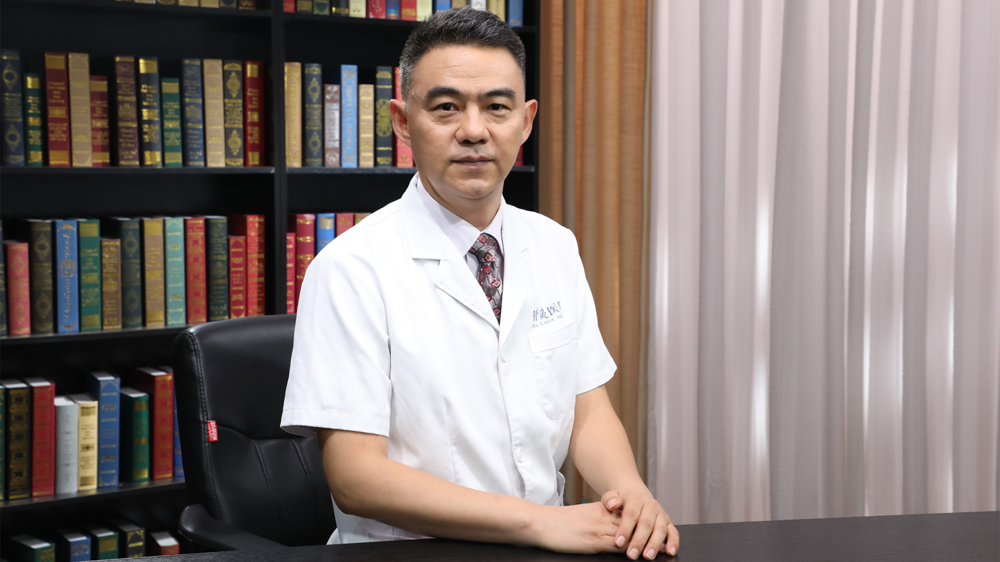

1.112 针灸防治卵巢早衰¶
房繄恭 主任医师¶

中国中医科学院针灸医院副院长 主任医师 博士生导师 博士后合作导师；
岐黄学者；中国中医科学院中青年名中医；国医大师刘敏如传承弟子；中国针灸学会妇科生殖专业委员会第一任主任委员 艾灸分会副主任委员；世界中联中医药国际化品牌研究专业委员会副会长；世界针灸学会联合会 中国针灸学会卵巢早衰（POI)专家工作室创建人。
主要成就： 在国内建立了60余家卵巢早衰工作室和专病门诊；国家十三五重点研发计划课题、十二五科技支撑计划课题、国家自然科学基金等课题负责人；主编、参编学术专著6部；发表学术论文60余篇。
专业特长： 熟练掌握针灸、正骨、浮针等技术。对卵巢低反应、卵巢功能减退、早发性卵巢功能不全、薄型子宫内膜、反复移植失败、反复胎停、男性少弱畸形精子症等不孕不育；压力性尿失禁（漏尿）、慢性盆腔痛、便秘、性功能障碍等盆底功能障碍；颈椎病、腰痛、膝关节痛；过敏性鼻炎等疾病的治疗具有丰富经验。
FSH（促卵泡激素）值达到多少算卵巢早衰、早发性卵巢功能不全？¶
（采访）房主任，首先请您跟我们讲讲什么是卵巢早衰？
关于卵巢早衰，其实有这样几个相关的概念，大家可能要搞清楚一下。一个叫卵巢功能减退，一个叫早发性卵巢功能不全，还有一个就是大家比较熟悉的卵巢早衰。实际上是一个疾病在不同的过程中，根据轻重程度不同来区分的。
所谓卵巢功能减退，有一个是生理性的，有一个是病理性的。像女性一般到了35岁以后，是一个自然的生理过程，出现体内激素水平下降，卵巢功能自然生理状态减退。女性一般在50岁左右出现绝经，也就是通常讲的更年期，实际上到了50岁左右，女性的卵巢功能基本上到了衰竭的阶段，这是女性自然的生理过程。
我们讲的所谓的卵巢功能减退、早发性卵巢功能不全、卵巢功能衰竭，通常是一个病理状态，它是什么概念？如果在35岁之前出现了卵巢功能提前减退，医学把它称为卵巢功能减退。像一般的卵巢功能减退，就是指临床症状比较轻的这种情况。再进一步发展为早发性卵巢功能不全，到了终末阶段称为卵巢早衰，这是不同的概念。
早发性卵巢功能不全是从2016年开始，欧洲人类胚胎与生殖医学会提出来这样一个概念，现在有一个比较明确的定义，是指女性40岁之前出现了卵巢功能减退，比较严重的情况，我们称为早发性卵巢功能不全，一般包括3条：第一个是年龄的界限，就是说女性40岁之前；另外临床症状可以表现为月经稀发或者闭经；第三个就是实验室检查，一般最主要的就是指的FSH，也就是促卵泡激素，这个数值大于25U/L。如果符合这3条，就可以诊断为早发性卵巢功能不全。
实际上原先还有卵巢早衰的概念，其实年龄的界限是一样的，也是指40岁之前，但是过去一般指的临床症状是闭经4个月，另外实验室激素检查水平FSH大于40U/L，现在实际上一般的医学界都用早发性卵巢功能不全，替代了卵巢早衰这样一个概念。但是我觉得也不能完全替代，我倒是建议医学界采用卵巢功能减退，早发性卵巢功能不全，然后到了终末阶段，卵巢功能衰竭这样一个诊断，我觉得可能更加符合临床，不要把早发性卵巢功能不全和卵巢早衰完全割裂开来。
所以通常说的卵巢早衰，强调一个“早”字，就是违背了人体正常的一个生理衰退的过程，提前出现的，所以把它称为卵巢早衰。
（采访）也就是说女性在正常情况下，在35岁以后，卵巢功能就会慢慢衰退，但是如果提前发生了衰退，就称之为早衰。
对，这个概念应该是比较准确的，女性在35岁出现比较急剧的激素水平下降，一般就是称为卵巢功能障碍或者卵巢功能减退，所谓的卵巢早衰，或者早发性卵巢功能不全，是女性40岁之前就出现了类似于50岁更年期的这样一个表现，生育能力急剧下降或者完全丧失，我们把它称为早发性卵巢功能不全，或者叫卵巢早衰。
怎么简单判断自己卵巢功能有没有衰退？¶
（采访）房主任，女性能不能从哪些表现能够看出自己是不是有卵巢功能衰退？
卵巢功能减退实际上有很多方法都可以做出一个检测，当然最专业的还是由医生，到医院里边通过一些化验检查，包括B超这些结合在一块，来进行诊断。实际上老百姓，一般的女性朋友，也可以通过一些自我的判断方式，也可以达到一个自我诊断。
比方最简单的，女性一定要关注月经周期的变化，月经周期一般女性正常是28天左右，如果出现月经周期缩短或者延长，当然医学上讲的所谓月经周期异常，一般是提前一周以上或者是延后一周以上，这样才称为一种不正常的状态。比方偶尔有一个周期，提前或者拖后两三天、三五天，它有一个正常的波动范围。
另外一个女性月经量的改变通常也会有一个提示，一般卵巢功能减退或者卵巢早衰的患者，通常会表现为月经量减少，很少有增加的情况，当然也有个别的患者表现为增多的情况，但是大部分都是月经量减少。因为每个人经量差别比较大，比方发现月经量比正常如果减少1/3，甚至1/2以上，这个时候可能要引起重视，建议尽早到医院就诊。
另外还有一个就是女性经期时间的长短，一般女性正常月经周期3-7天左右，如果明显缩短或者明显增加，也要引起关注。比方有的经期就持续半天多，一天多，跟平常月经周期差异比较大，就要引起重视了。或者本来正常的月经周期，一般3-5天或者5天左右，突然连续两三个月经周期出现经期持续10天左右，或者有的甚至淋漓不断，持续整个周期，这个时候一定要到到医院及早进行就诊和检查。
另外还有一个女性卵巢功能评分表，大家也可以从网上下载，或者根据表格提示做一个自测，也可以很好地来提示卵巢功能减退的情况。我把卵巢功能评分表简单给大家介绍一下。
女性卵巢功能评分表是自测，通常有15个条目，有15个小的问题，像比较典型的就是月经不调，占的分值比较高，如果没有月经不调的情况，就可以记作0分，如果偶尔出现，就记作1分，如果经常出现月经不调的情况，就记作2分，更严重一点，如果出现了闭经的情况，就记作3分。其他还包括失眠、情绪障碍，包括容易激动，还有感觉障碍，皮肤改变，包括大家熟悉的更年期这种潮热、出汗的症状，包括抑郁，容易疑心病，就是更年期常见的一些症状。另外像临床上还有比较常见的眩晕、疲乏，包括关节疼痛、头痛，包括心慌、心悸，另外还包括泌尿和生殖系统的一些问题，比方泌尿系感染，性生活的状况。
综合起来这15个条目，如果评分达到了8分以上，就说明卵巢功能有一定程度的减退。如果综合评分达到了19分以上，就说明卵巢功能减退的程度相对比较重一些。更严重的，如果评分达到了31分以上，就说明卵巢功能减退的情况非常严重了。达到中度和重度的情况，就建议及早到医院就医，请医生来诊断。
卵巢功能评分表—自我检测卵巢功能衰退情况¶
女性卵巢功能评分表，大家也可以从网上下载，或者根据表格提示做一个自测，也可以很好地来提示卵巢功能减退的情况。我把卵巢功能评分表简单给大家介绍一下。
女性卵巢功能评分表是自测，通常有15个条目，有15个小的问题，像比较典型的就是月经不调，占的分值比较高，如果没有月经不调的情况，就可以记作0分，如果偶尔出现，就记作1分，如果经常出现月经不调的情况，就记作2分，更严重一点，如果出现了闭经的情况，就记作3分。其他还包括失眠、情绪障碍，包括容易激动，还有感觉障碍，皮肤改变，包括大家熟悉的更年期这种潮热、出汗的症状，包括抑郁，容易疑心病，就是更年期常见的一些症状。另外像临床上还有比较常见的眩晕、疲乏，包括关节疼痛、头痛，包括心慌、心悸，另外还包括泌尿和生殖系统的一些问题，比方泌尿系感染，性生活的状况。
综合起来这15个条目，如果评分达到了8分以上，就说明卵巢功能有一定程度的减退。如果综合评分达到了19分以上，就说明卵巢功能减退的程度相对比较重一些。更严重的，如果评分达到了31分以上，就说明卵巢功能减退的情况非常严重了。达到中度和重度的情况，就建议及早到医院就医，请医生来诊断。
月经初潮越早，绝经就越早、卵巢功能衰竭就越早吗？¶
（采访）房主任，是不是女性月经初潮年龄越早，卵巢功能减退时间也就来得越早吗？
严格意义上不能这么说，因为每个女性月经初潮的时间，其实有的差异还是比较大的。
比方现在随着人们生活水平的提高，在社会上我们发现一些小女孩月经来得非常早，可能八九岁就已经月经初潮，但是卵巢功能减退，跟初潮年龄不是完全成正比的。比方月经来得越早，绝经时间就越早，是不能这样说的，但是有一定的影响。
因为卵巢里边我们称为窦卵泡的数量，其实在娘胎里的时候，数目就已经确定了，后边一般不会再增加，只会逐步减少。像一般在胎儿时期，将近能达到两三百万，到出生的时候可能只有八九十万，到了更年期，卵巢里边的窦卵泡的数目可能大概只剩一千左右的数量了，这个是不以人的意志为转移的，就是自然减少的过程。
（采访）是不是绝经年龄越早，卵巢功能减退的时间也就越早？
应该是这样的，越早绝经，实际上就是代表提前出现卵巢功能彻底衰竭。因为女性更年期通常代表卵巢功能到了最后的衰竭阶段，也就是说到了丧失生育能力的这样一个阶段。如果绝经出现得越早，肯定是病情越严重，也就说明卵巢衰退的情况越重。
过度减肥会导致卵巢早衰吗？¶
（采访）房主任，女性过度减肥，节食减肥，也会导致卵巢早衰吗？
现在女性都比较追求美丽，对体型过于追求，一般女性常用的就是节食，有的配合锻炼，过度减肥。尤其像我们在临床上碰到过有的女性，在短时间内通过节食，通过吃减肥药，体重下降二三十斤，这种情况就会出现闭经的情况，出现卵巢早衰的情况。
第一提醒大家，不要过度减肥，根据BMI（体重指数）大家算一下，如果在正常的体重指数范围内，就不太建议减肥，如果过度减肥或者采用一些比较极端的，包括过度节食，服用一些减肥药，在短时间内如果体重快速下降，容易引起闭经，卵巢功能衰竭的情况。
（采访）在正常减肥的过程当中，是不是也可以通过观察月经是否正常，来判断有没有对卵巢功能产生影响？
这个实际上是判断卵巢功能是否改变最简单的一个方法，大家很容易做到，就是看月经是否有改变，包括月经周期，包括经期时间长短，包括月经量的改变，甚至医学上比较重视月经颜色的改变。这四个方面大家可以做一些观察，如果用科学适当的减肥方式，月经不出现明显的变化，应该不会影响到卵巢功能。
压力大、熬夜会引起卵巢早衰吗？¶
（采访）房主任，卵巢早衰和心理压力大有关系吗？
卵巢早衰跟心理压力大，其实有非常密切的关系。
随着生活水平的提高，大家生活方式也发生了很多改变，包括现在工作压力，学习压力，大家可能感觉都非常大，另外这种过度的生活压力，会导致人体内分泌的改变，导致卵巢功能的失调，所以也可以引起卵巢功能的减退，甚至引起衰竭的情况。
像这种情况我们在临床上也比较常见，比方小孩在中考、高考，甚至大学毕业以后考研的阶段，这种升学压力，包括有的时候可能工作上压力比较大的情况下，都会出现不同程度的月经改变，到医院一查会发现出现不同程度的卵巢功能减退。我在临床上见过十几岁的小女孩，已经出现了卵巢功能衰竭。
我记得临床上有一个孩子，她来例假的时间基本上是正常的，14岁左右就有了月经初潮，前边基本上还规律，到了16岁左右，正好孩子处在青春期，包括考学压力比较大，又加上这个孩子比较胖，过度节食减肥，到16岁的时候就出现了闭经的情况。说起来太可怕了，她绝经期的症状可能要持续很多年，大家想刚刚16岁，正常女性绝经年龄是50岁左右。
这是我们在门诊上碰到的一个比较极端的例子，但是像在临床上出现卵巢早衰，20多岁、30多岁出现卵巢早衰，还是非常常见的。
（采访）房主任，经常熬夜会影响卵巢功能吗？
经常熬夜会导致女性内分泌失调，对卵巢功能也是有一定影响的，所以不太建议大家熬夜，一定要养成早睡早起的习惯，对于卵巢功能的维护，对于永葆青春还是有一定效果的。
卵巢早衰对身体会有什么影响？¶
（采访）房主任，如果已经出现了卵巢早衰，会有什么样的影响？
卵巢功能减退或者卵巢早衰，其实对女性的影响还是非常大的。
首先我们要了解卵巢它的主要功能是什么。大家比较熟悉的是卵巢能排出卵子，跟生育相关，跟女性的生育能力是密切相关的。
另外一个，卵巢是一个性激素分泌器官，尤其是雌激素，它跟人体的健康有密切的关系，包括女性第二性征与雌激素有很密切的关系。
另外女性比较注重美丽，雌激素跟女性体内脂肪分布是有密切关系的。所以大家会看到，女性到了更年期，很多女性出现的一个很重要的改变，就是体型的改变，体型改变就是表现为向心性肥胖，实际上就是体内激素水平下降以后，导致了女性体内的脂肪重新分布，一般都集中在腹部、腰臀部这些地方，所以就形成了向心性肥胖。
另外一个就是卵巢功能衰退以后，体内激素水平下降，包括对骨质的吸收，包括对心血管和脑血管的影响，这都是卵巢早衰出现以后，它的一个远期的并发症，对人体的远期影响。
所以卵巢功能对于女性的身体健康，还是具有非常重要的意义的。
中医认为卵巢早衰和什么有关？¶
（采访）房主任，从中医角度看，卵巢早衰出现的原因都有哪些？
从中医的角度，因为我是针灸大夫，其实中医里边认为跟经络，特别是奇经八脉里边的，包括任脉和冲脉这两条经脉，有非常密切的关系。
中医里边任脉叫任主胞胎，任脉主要的生理功能就跟孕育、生育有密切的关系。另外一个冲脉跟生育也具有非常密切的关系，冲脉中医也把它称为十二经脉之海，气血之海。这是从经络关系，冲脉和任脉跟卵巢功能具有密切的关系。
另外从脏腑方面，大家都知道人体有五脏六腑，跟生殖相关最为密切的就是肾。中医讲肾主生殖，肾为先天之本，所以卵巢功能正常与否与肾的功能也有密切的关系。另外像其他的脏腑，跟脾、肝这两个脏腑也有密切关系。从中医里边讲，肝具有藏血的功能，脾为人体后天之本，气血生化之源，所以都跟卵巢功能，跟女性的月经有密切的关系。
另外还有一个，比方中医里边有一个宫寒的概念。所谓的宫寒，不是单纯指的大家所熟悉的子宫这个概念，中医所说的宫寒，通常是指的胞宫的概念，中医的胞宫包括什么？包括大家比较熟悉的，像女性的子宫、卵巢、输卵管，女性生殖系统这一套，一般中医统统把它称为胞宫。
所谓宫寒实际上就是寒邪侵袭胞宫，中医的一种简单的称呼。宫寒跟卵巢早衰不是必然的联系，但是宫寒是引起卵巢功能减退、卵巢早衰，从中医来讲也是一个非常重要的证型。尤其随着现在生活水平的提高和生活习惯的改变，比方像现在这个季节，正好是夏天，我们在房间里边开空调，包括地铁里边，公交车里边，包括办公室里边，空调温度开得都比较低，就容易损伤人体的阳气，导致宫寒这种情况的出现。
所以中医主要是从冲脉、任脉，肝、脾、肾这三个脏腑来认识，它们功能失调，会导致卵巢功能失调。
卵巢早衰的女性会比同龄人显老吗？¶
（采访）房主任，卵巢早衰会让女性看起来更老吗？
严格来说，卵巢早衰可以导致女性显得过于衰老，应该是相对比较明确的，这也是众多女性比较担心的一个问题，为什么卵巢早衰会导致女性更加显老？
卵巢功能减退以后会导致体内激素水平急剧下降，这是导致女性看着衰老的一个非常重要的原因。因为雌激素可以分布在人体的肌肉、皮肤，包括骨骼，包括其他脏器、器官里边，除了生育之外，其实跟人体的很多系统也有密切的关系，包括人体的水液代谢，卵巢功能下降以后，首先女性就是容易出现肥胖。另外一个，面部皱纹会增加，脸色会显得晦暗，没有光泽，缺乏一种水润的感觉。
所以卵巢早衰的患者通常比一般同龄的女性看着会更加老一些，这个是有科学道理的。
宫寒是怎么回事？会引起卵巢早衰吗？¶
（采访）房主任，宫寒是怎么回事？会导致卵巢早衰吗？
宫寒跟卵巢早衰不是必然的联系，但是宫寒是引起卵巢功能减退，卵巢早衰，从中医来讲也是一个非常重要的证型。
所谓的宫寒，不是单纯指的大家所熟悉的子宫这个概念，中医所说的宫寒，通常是指的胞宫的概念，中医的胞宫包括什么？包括大家比较熟悉的，像女性的子宫、卵巢、输卵管，女性生殖系统这一套，一般中医统统把它称为胞宫。
所谓宫寒实际上就是寒邪侵袭胞宫，中医的一种简单的称呼。特别是女性可以表现为下腹部或者小肚子怕冷，包括经常会出现痛经，也会出现经血带有血块这样一些临床表现，所以对女性的危害也比较大。
中医对于宫寒的治疗，无论是药物、针刺、艾灸都具有比较良好的治疗效果。
（采访）房主任，女性经常吃凉的，喝冷饮，会不会导致卵巢早衰？
实际上应该说吃凉的，喝冷饮，不是直接可以导致卵巢早衰的因素，但是肯定有密切的关系。
刚才我们也讲到了胞宫，宫寒的情况，多半女性比较喜欢喝冷饮，比较贪凉。包括现在很多女孩子在冬天为了追求美，经常会穿裙子，导致胞宫受寒，寒凉侵袭，导致宫寒，会导致卵巢功能减退，所以这一块大家还是要注意，冷饮适可而止，不要过度贪凉。
再就是中医养生保健叫适寒暑，什么样的季节就要穿什么样的衣服，要注意保暖，特别像冬天不要穿得过于少，过于单薄，这样也容易导致宫寒情况的出现。
房氏十三针（调经促孕十三针）能改善卵巢功能吗？有助于怀孕吗？¶
（采访）房主任，针灸能不能改善卵巢功能，提高卵巢早衰女性的受孕几率？
实际上讲到了我的专业，因为我一直从事针灸临床工作，像大家比较熟悉的颈肩腰腿痛，像偏瘫、面瘫，包括头痛、胃肠道疾病，这个都是针灸治疗的一些常见病和多发病，也是针灸的一些优势病种。
但是最近十多年以来，我一直采用针灸治疗卵巢功能障碍，包括卵巢功能减退、卵巢功能不全、卵巢早衰这些疾病，用于不孕不育的治疗，结合试管婴儿辅助技术，取得了一个非常良好的临床效果。这个是过去针灸科里边不太常见的一些病症。
针灸在不孕不育，以及辅助生殖的治疗，发现有四大作用，我把它总结为，第一个作用就是调经的作用，第二个是助孕的作用，第三个是安胎和保胎的作用，另外一个，第四个对于没有生育要求的患者，具有抗衰老的作用。所以总结为调经、助孕、安胎和抗衰老四大作用。
房氏十三针（调经促孕十三针）能提高试管婴儿的成功率吗？¶
（采访）房主任，针灸能提高试管婴儿的受孕率吗？
现在我们初步的临床研究结果已经出来了，包括国内外，还有其他的一些专家学者也做了相关的研究，这一块在提高试管婴儿成功率方面是疗效比较肯定的，具有很好的一个提升作用。
我门诊上接触的病人，绝大多数都是采用试管婴儿辅助生殖相关技术，反复失败的一些患者，基本上做试管的机会都没有了，医生建议患者通过借卵这样一种方式达到生育的目的。通过针灸治疗以后，使卵巢功能得到很好的恢复，为患者提供了试管成功的一个机会。
我在临床上通常会让患者进入试管促排周期之前，提前3-6个月来进行针灸干预，使卵巢功能得到最大限度地改善以后，再进入促排周期，进入试管婴儿周期，这样成功的可能性就会更大一些。
什么是调经促孕十三针（房氏十三针）？¶
（采访）房主任，什么是调经促孕十三针？
调经促孕十三针，实际上是我这么多年来的一个临床经验的总结，其实最初也没有一个明确的说法，就是我临床上常用的一组针灸，用于改善卵巢功能，用于试管婴儿反复失败治疗的常用的针灸处方。
有一次在中央电视台做节目的时候，一位编导给我提出来一个要求，说这么多穴位大家也记不住。让我给这个处方起一个名字，就取了这样一个名字，叫调经促孕十三针。
这个名字其实包括了两方面含义，实际上是我临床上治疗不孕不育，用于辅助生殖的一个常用的针灸处方，这个处方里边包含了十三个穴位。所以当时我给这一组穴位取了个名字，叫调经促孕十三针，也有的把它称为房氏十三针，或者简单地称为十三针。
实际上经过这么多年的临床研究，现在来看调经促孕已经不足以概括这组穴位的作用了，它的作用应该更加广阔，具有调经、助孕、安胎，还有抗衰老，应该是四大作用。
（采访）房主任，房氏十三针治疗卵巢早衰一般都会选取哪些穴位？
常用的穴位，像大家比较熟悉的任脉上的中脘穴、关元穴、天枢穴，这是腹部的穴位。下腹部的像盲俞穴，子宫穴。
另外就是下肢部的，像三阴交，太溪、太冲，另外包括足三里、血海，这都是临床上比较常用的。
这里边还包括一些头部的穴位，主要发挥疏肝宁神，安神志的这样一个作用。头上的穴位比较常用的像百会、神庭和本神。这组穴位实际上是源自于我的硕士生导师，山东中医药大学全国名老中医单秋华教授的三神穴，我在她这个基础上适当予以调整，因为三神穴用的是四神聪、神庭、本神，穴位比较多，我就把它简化为百会，神庭、本神这样三个穴位。
另外十三针里边还有很重要的一组穴位，在腰骶部，这里边包括俩穴位，一个是肾俞穴，一个是八髎穴里的中髎穴或者次髎穴，这两个穴位通常我会交替来应用。
这样共同组成了房氏十三针的穴位。
（采访）房主任，这些穴位在行针的时候有固定的顺序吗？
没有很严格的顺序，但是一般在临床上也有自身形成的一个特色，一般我们先选四肢远端的穴位，一般先针刺下肢部的穴位，再针刺头部的穴位，最后再针刺下腹部和腰骶部的穴位，这样会比较好一些。
房氏十三针（调经促孕十三针）是怎么治疗卵巢早衰的？¶
（采访）房主任，房氏十三针治疗卵巢早衰的中医原理具体是什么？
在房氏十三针里边，非常重要的一个原理就是紧紧抓住了卵巢功能减退或者卵巢早衰的中医核心的病因病机。像在《黄帝内经》里边讲，女子二七天癸至，任脉通，太冲脉盛，所以导致了女性月经来潮。其实还有第一句话，女子七岁肾气盛，其实综合起来，就是女性到了二七，也就是14岁左右已经具备了生育能力。
中医认为女性具备生育能力的四大前提是什么？肾气盛，天癸至，任脉通，太冲脉盛，这使女性具备了生育能力，叫女子二七月事以时下，故有子，女性月经正常来潮，具备生育的能力。女子到了七七，也就是大概50岁左右，49岁左右，女性正常身体发生了什么样的变化？神气衰，天癸竭，任脉虚，太冲脉衰少，女性形坏而无子，什么叫形坏而无子？就是女性的体态发生了改变，出现更年期向心性肥胖，无子就是女性彻底丧失了生育能力。
从经典的《黄帝内经》里边，我们可以看到，女性具备生育能力和丧失生育能力，其实跟这四者都有密切的关系。肾气的盛衰，天癸的至与否，任脉和冲脉的气血充盈与否，其实针对女性卵巢功能减退也好，一直到衰竭也好，早衰也好，包括女性不孕，实际上我把它提炼为，导致女性不孕不育的主要的病因病机是，冲任不通，肝肾不足，然后加上肝气郁结这样三大因素。
围绕这三大病因病机，我们确定了一个调冲任，补肝肾，安神志，这样三大治疗原则。我这一组穴位就是紧紧围绕着中医的这三大治疗原则，精心挑选了一组处方，所以在临床上取得了非常好的效果。
（采访）房主任，房氏十三针治疗卵巢早衰一般都会选取哪些穴位？
常用的穴位，像大家比较熟悉的任脉上的中脘穴、关元穴、天枢穴，这是腹部的穴位。下腹部的像盲俞穴，子宫穴。另外就是下肢部的，像三阴交，太溪、太冲，另外包括足三里、血海，这都是临床上比较常用的。
这里边还包括一些头部的穴位，主要发挥疏肝宁神，安神志的这样一个作用。头上的穴位比较常用的像百会、神庭和本神。这组穴位实际上是源自于我的硕士生导师，山东中医药大学全国名老中医单秋华教授的三神穴，我在她这个基础上适当予以调整，因为三神穴用的是四神聪、神庭、本神，穴位比较多，我就把它简化为百会，神庭、本神这样三个穴位。
另外十三针里边还有很重要的一组穴位，在腰骶部，这里边包括俩穴位，一个是肾俞穴，一个是八髎穴里的中髎穴或者次髎穴，这两个穴位通常我会交替来应用。这样共同组成了房氏十三针的穴位。
另外一个我们这组针灸的治疗方案，不光是对于不孕不育，反复试管失败的患者，其实对于很多的妇科病，后来我们发现都可以取得一个非常好的临床效果。因为中医都是辨证论治，一人一方，不同的证型有不同的治疗方案，我们这一组相对固定的针灸治疗方案，为什么会对很多妇科，不孕不育的患者都能取得一个非常好的疗效？
后来这些年我也在不断反思，实际上我们恰恰是抓住了肾虚和冲任不足，跟所有的妇科疾病和不孕不育具有最密切关系的这样一个核心点。所以我们这一组治疗方案对于很多妇科病，包括各种原因的不孕不育。
像这组穴位我其实只变了一两个穴位，用于男性不孕不育的治疗，包括少精、弱精、畸形精子症都取得了非常好的一个效果。中医对于男性不孕不育，我们认为与肾虚，与冲任二脉失调也具有密切的关系。
所以这组穴位为什么在国内外这么受大家推崇，取得了一个非常好的效果，归根到底还是要回归到中医的这种思维方式，要用中医的思维方式来认识这个疾病，确定治疗原则，从而确定治疗方案，才能取得一个好的临床效果。
（采访）房主任，房氏十三针适当调整一些穴位，也可以提高男性的生育能力，是吗？
对，房氏十三针，里边有一个子宫穴或者叫卵巢穴，是女性特有的一个穴位，一般男性我们不太用这两个穴位，我们调整一两个穴位，对于男性不孕不育，同样取得了一个非常好的临床效果，包括像我们临床上，还有男性里边发病率比较高的前列腺增生，前列腺肥大，包括盆腔痛，都取得了非常好的一个临床效果。
房氏十三针（调经促孕十三针）治疗卵巢早衰有什么优势？¶
（采访）房主任，针灸治疗卵巢早衰和其他疗法比起来都具有哪些优势？
谈到这一点，其实针灸还是有它自身的特点和优势的。
首先针灸不用药，在国际上针灸被称为绿色疗法，它没有任何的副作用，另外一个我觉得它的优势，不光是没有副作用，首先得有疗效，我觉得它最大的优势还是临床疗效的可靠性和有效性，这是一个非常大的优势。
中医针灸里边一个穴位，它具有非常鲜明的特色，所谓的双向调节的作用，就是同一个穴位，既可以用于寒证，也可以用于热证，既可以用于虚证，也可以用于实证，这是针灸一个非常大的特色。它跟大家所熟知的中药，会有很大的一个区别，因为中药有寒热、温凉，酸、苦、甘、辛、咸，所谓的四气五味这样一个特性，比方寒性病，我们可能就要用热性的药物，热性病可能就要用一些凉性的药物，这样来进行治疗。
但是针灸，比方以肾虚为例，不管是肾阴虚或者是肾阳虚，或者是阴阳两虚，中药治疗药物是不一样的，在针灸里边它有一个比较明显的，也算是独特的优势和特点，可能同时采用肾俞、太溪这样一些穴位，阴虚的患者也适用，阳虚的患者也适用，阴阳两虚的患者，同样一组穴位都可以适用，这就是针灸最大的一个特色和优势。
当然跟其他疗法相比，包括中药，西药也都是各有所长，有的时候临床上会结合起来，像西医的激素替代疗法，有它自身的一些好处，相对于闭经的患者，可能通过短期的针灸治疗，不一定能够让患者的月经完全恢复，为了更好地来保护患者的子宫和卵巢，防止萎缩，我们在针刺治疗的过程中，可能间断性地会使用雌孕激素西医替代疗法，也可以采用针灸和中药相结合，或者是针灸加中药、加西药的这样一种治疗方式，会收到事半功倍的效果。具体是采用针灸、中药，还是西药结合，要根据患者的病情来确定。这样达到最大限度地提高患者临床疗效的作用。
什么样的卵巢早衰患者适合房氏十三针（调经促孕十三针）治疗？¶
（采访）房主任，所有卵巢早衰的女性都可以使用房氏十三针进行治疗吗？
房氏十三针的临床适应证非常广，到目前为止，基本上没有发现比较明显的人群，不适合采用针刺治疗，因为针灸治疗跟中药治疗，大家所熟悉的中医中药的治疗还有所不同。
中医针灸里边一个穴位，它具有非常鲜明的特色，所谓的双向调节的作用，就是同一个穴位，既可以用于寒证，也可以用于热证，既可以用于虚证，也可以用于实证，这是针灸一个非常大的特色。
它跟大家所熟知的中药，会有很大的一个区别，因为中药有寒热、温凉，酸、苦、甘、辛、咸，所谓的四气五味这样一个特性，比方寒性病，我们可能就要用热性的药物，热性病可能就要用一些凉性的药物，这样来进行治疗。
但是针灸，比方以肾虚为例，不管是肾阴虚或者是肾阳虚，或者是阴阳两虚，中药治疗药物是不一样的，在针灸里边它有一个比较明显的，也算是独特的优势和特点，可能同时采用肾俞、太溪这样一些穴位，阴虚的患者也适用，阳虚的患者也适用，阴阳两虚的患者，同样一组穴位都可以适用，这就是针灸最大的一个特色和优势。
现在基本上，几乎绝大多数的患者都是适用的，包括肿瘤放化疗以后，或者手术以后引起的闭经，卵巢功能丧失，其实通过针灸治疗以后，仍然可以取得一个比较良好的缓解临床症状的效果。所以到目前为止，一般没有特别明确的禁忌证，所以使用范围还是比较广的，另外安全性也是非常高的。
（采访）房主任，有没有哪些卵巢早衰的女性是更适合房氏十三针的，用房氏十三针治疗效果会更好？
当然从治病的角度肯定是越早治疗越好，临床效果越好。比方对于一般的卵巢功能减退的患者，见效就比较快，像程度比较严重的卵巢功能不全，甚至到了卵巢衰竭的地步，治疗起来难度就要大得多。
另外一个像针灸其实它发挥治未病的优势，比方对于试管婴儿的患者，试管婴儿多次失败的患者，我在临床上通常会让患者进入试管促排周期之前，提前3-6个月来进行针灸干预，使卵巢功能得到最大限度地改善以后，再进入促排周期，进入试管婴儿周期，这样成功的可能性就会更大一些。
房氏十三针（调经促孕十三针）治疗卵巢早衰要多长时间？¶
（采访）房主任，房氏十三针治疗卵巢早衰需要扎针多少次？
针刺的次数和疗程对于临床疗效也是非常重要的方面，但是针对不同的病情差距会比较大。比方临床上我们经常接触的女性排卵障碍，可能有的针刺几次以后就取得比较明显的临床疗效，或者经过两三个月经周期的治疗，就可以取得非常好的疗效。
像大家所熟知的所谓的卵巢早衰，实际上是国内外生殖医学界公认的一个世界性难题，因为这个疾病治疗难度确实比较大，通常很多患者比较着急要孩子，恨不得扎个三五次以后就想见效，这个是不现实的。一般对于不孕不育和辅助生殖的治疗，至少以一个月经周期作为一个观察周期，因为只有经过一个月经周期以后，到下一个周期，可能才能看到月经的改变，包括激素水平或者超声下的一些临床改变，所以跟其他的疾病是不太一样的。
比方像治疗颈肩腰腿痛，可能当天扎完以后，患者取针以后就会觉得明显的减轻或者改善，当然对于很多比方痛经的患者，针灸见效也很快，可能经过三五次治疗以后效果比较明显。但是对于卵巢早衰、不孕不育的患者，就不能想着速战速决了，不能有速战速决的这样一个想法，这个是非常关键的。其实很多患者发现十三针治疗效果也非常好，但是都特别着急，可能有的时候做一两个月就放弃了，所以这里边要跟患者做一个非常好的沟通。像这一类的疾病，它的疗程就是比较长，所以一定要有耐心，要有足够的耐心和信心，这样才能取得比较好的临床效果。像个别坚持比较好的患者，经过了两三年的治疗，最后圆了母亲梦。
所以针对不同的病情，我们会确定不同的疗程。从针灸治疗的次数上来讲，我们经过这么多年的临床实践和摸索，现在一般采用一周三次的治疗方式，这样一个治疗频率，既可以保证临床疗效，也不至于使患者就医的负担过重，这是一个比较好的我的临床经验，可以供大家参考。
（采访）房主任，房氏十三针在整个疗程里，如果患者漏做一次或者没有连续做，会对这个效果有影响吗？
这个其实也是非常重要的一个问题，当然肯定是连续治疗效果会更好一些，但是由于工作或者其他原因，比方出差，可能实在做不了，实际上漏做一次或者少做一次，偶尔少做一次，对疗效是没有影响的，但是我们主张尽可能坚持，按我们的要求和疗程来进行治疗，这样才能最大限度地保证临床疗效。
卵巢早衰患者在月经期还能继续做房氏十三针（调经促孕十三针）治疗吗？¶
（采访）房主任，卵巢早衰患者在月经期还可以做房氏十三针吗？
这个我觉得也是特别好的一个问题。因为从针灸的古典医籍，还有现在的临床经验，很多人一般认为女性在月经期一般不要做针灸，尤其是下腹部或者腰骶部的穴位。
但是从我这么多年的临床经验和体会来讲，对于卵巢功能减退，卵巢早衰，包括月经不调这样一些患者，恰恰月经期是非常重要的治疗时间段。患者经常也会问到我这样一些问题，我经常跟她们开玩笑，不是适不适合的问题，而是月经期必须要来做针灸治疗，恰恰月经期是非常好的针灸治疗的时间点，所以临床上我的所有患者一般月经期都会继续来做针灸治疗的。
这一点经过这些年的推广，也在针灸界，包括中医学术界，得到了越来越多专家和学者的认可，他们也觉得月经期进行针灸干预，可能临床疗效会更好一些，我们慢慢逐步的达成了一个共识。
房氏十三针（调经促孕十三针）治疗卵巢早衰，怀孕后还需要接着做吗？¶
（采访）房主任，卵巢早衰患者在针灸期间怀孕了，还需要接着做房氏十三针吗？
这种情况也是我在门诊上经常会被患者问到的一个问题，这里边分两种情况。
一般像第一次怀孕的患者，怀孕以后如果激素水平比较正常，各项检查都比较正常的情况下，一般就不再进行过多地针刺干预了，因为患者受孕以后所有情况都比较良好，针灸就不要进行过多地干预。
但是实际上这些年我临床上有大量反复移植失败，反复流产的患者，像这类患者一般怀孕以后，我们会让患者继续来做针灸治疗。通常我门诊像针灸保胎的患者，一般会用到怀孕12周左右，患者病情稳定以后停止针灸治疗。
但是也要提醒大家一句，对于针灸保胎这一块治疗，或者患者怀孕以后的针灸治疗，一定要在具有丰富的临床经验的基础上再来做这一块工作，像一些初学者，不太建议做针灸保胎这一块，先把前边的调经和助孕这一块工作做好。当积累了足够丰富的临床经验以后，再来做针灸保胎的工作。
采用房氏十三针（调经促孕十三针）治疗卵巢早衰期间，日常要注意什么？¶
（采访）房主任，卵巢早衰患者针灸期间，在生活、饮食上有没有需要注意的？
这一点提得也非常好。像这类的患者，首先医生能做的更多的是提供医疗手段，其实患者生活方式的改变，对于病情的恢复也是非常重要的一个方面。
生活方式改变，首先第一个就是一定要早睡早起，因为现在生活节奏的变化，大家通常习惯睡得比较晚，我门诊上很多患者一般晚上都超过12点多才睡觉，甚至很多习惯于凌晨1左右才入睡，对人体的危害还是非常大的，所以要养成早睡早起的一种习惯。通常什么叫早睡？现在一般我在临床上要求患者一般晚上11点之前，最好10点之前，但是现在生活方式的改变可能也比较困难，但是最好还是10点之前就入睡。
另外一个我们一般会要求患者每周做3-5次有氧运动，所以作息习惯的改变，包括体育锻炼方式的变化，就是生活方式改变非常重要的两个内容。
另外一个像在饮食上，不要过食辛辣，不要过食寒凉类的食物。另外一个尤其是女孩子比较爱美，喜欢保持身材良好，所以很多人通过节食的方式来达到减肥的目的。在治疗期间，我们要求患者饮食一定要均衡，不能过于节食。
基本上就是三大方面的注意，这一块实际上作为医生来讲，我们有责任告诉患者怎么做，但是更多要依靠患者的自觉性，这样医患双方结合起来才能取得一个最大的临床治疗效果。
什么是火龙灸？能治疗什么病？¶
（采访）房主任，什么是火龙灸？
火龙灸这几年大家可能在养生馆里边也经常会见到，但是我们讲的火龙灸跟社会上的火龙灸，可能不是完全相同的一个概念。
火龙灸实际上最早称为督灸，主要用在督脉上进行治疗，所以把它称为督灸，也称为长蛇灸。后来我把火龙灸进行了一个改良，不但用于督脉，还用于下腹部的冲脉和任脉，包括身体其他一些部位，为了更好地体现疗法的特色，并且艾绒点燃以后会像一条火龙一样，所以我们给它取了一个火龙灸的名字，并且适应证发生了很大的变化。
像过去主要用于强直性脊柱炎，类风湿关节炎这类疾病，我在临床上用火龙灸，更多地是针对像不孕不育，反复试管失败的，卵巢功能减退的，薄型子宫内膜的患者，通过临床观察以后发现，也具有良好的临床效果。
（采访）房主任，火龙灸具体是怎么操作的？
火龙灸的操作比一般的艾灸要复杂一点，一般我们把它分为四层。
第一层充分暴露施术的部位，比方我们作用于督脉或者作用于腹部的，充分暴露施术的部位以后，第一层铺上一层调制好的药粉，这个药粉一般会根据患者的具体情况来配置，我们自己配置的不同的药物。比方患者以宫寒为主，我们可以配置一些温经散寒的药物。比方患者是以阴虚为主的，我们可以用一些补肾阴的药物。如果患者是气滞血瘀，我们可以配置一些活血化瘀的药物，这是第一层，铺一层药粉。
第二层我们就会在这个药粉上面铺设一层桑皮纸，桑皮纸之上把加工好的姜蓉铺上，第四层铺设一层艾绒，加工好的艾绒一般做成枣核型的或者是橄榄型的，这样层层叠加起来，形成四层，最后把艾绒点燃，燃烧完了称为一壮。
临床上我们常用的就是两壮或者三壮，更换一次艾绒称为一壮，一般临床治疗两到三壮作为一次治疗的量，作用时间比较长，施术的部位比较广，所以作用力就会比较强，就会取得一个更加良好的临床效果。
（采访）房主任，火龙灸和艾灸是一个意思吗？
实际上火龙灸是艾灸其中的一种，通常我们会在体表垫厚厚一层姜蓉，在姜蓉上面再放上艾绒，点燃进行治疗，所以它也是艾灸的一种，我们称为隔姜灸或者隔物灸。
（采访）房主任，火龙灸治疗具体有哪些效果？
这里边既包含穴位的作用，经络的作用，生姜的作用，包括艾灸的作用。艾灸有很好的温阳散寒的作用，另外生姜大家都比较熟悉，是厨房里边非常常用的一种调味品，同时也是临床常用的一味中药，它也具有温阳散寒的作用，非常温性的药物。我们把它称为四位一体的作用，所以主要是发挥了温阳散寒、通经活络，激发人体经气的作用，这几者结合起来，对于宫寒的患者，阳气不足的患者就会取得事半功倍的效果。
当然这几年也发现，对于临床中医，我们辨证为阴虚的患者，后来发现火龙灸对于阴虚的患者，也同样能取得一个非常好的临床效果，所以临床适应证还是比较广泛的。
（采访）房主任，火龙灸通常一个疗程要做几次？
火龙灸因为四位一体，充分发挥了穴位、经络、药物和艾绒这样四方面的作用，它的作用力是非常强的。
我们临床上治疗，一般患者一周我们建议做1-2次，这样比较适宜。当然根据病情的轻重，像临床上一些患者病情比较严重的，一周也可以做3-5次的治疗，一般我们推荐做1-2次就可以了。对于一些特别严重的患者，像我们有一个患者，一周做5次治疗，这种情况不是太多，要根据患者不同的体质来进行调整，由医生来进行决定。
做火龙灸时要注意什么？¶
（采访）房主任，在做火龙灸期间有需要注意的吗？
因为火龙灸治疗的时间比较长，现在大概要一个小时左右，特别是冬天，或者夏天在吹空调的房间要做好防寒，除了治疗的部位做了充分暴露之外，其他部位做好防寒的处理。
另外一个在治疗期间非常重要的一点，大家一定要根据自己的耐受力，如果感觉在艾灸过程中比较烫的话，一定要及时提出来，让医生做一些适当的调整。因为患者经常会有一个误区，会认为越热效果越好，有的患者在治疗过程中就一直在忍着，这样很容易造成局部皮肤起泡的情况，出现水泡。一般保持比较温和的，热热的感觉，感觉比较舒适就可以，不要强行忍受。
另外一个，在治疗过程中，因为治疗的面积也比较广，大家注意保持体位的稳定，在治疗过程中，其实我们在临床上最怕的就是患者，因为做上火龙灸以后非常舒服，我们临床上发现很多患者在治疗过程中经常睡着了，突然打一个激灵，就会导致艾绒散落到皮肤上，造成一定的安全隐患，所以这是需要注意的几点。
做完火龙灸当天能洗澡吗？¶
（采访）房主任，做完火龙灸当天能洗澡吗？
洗澡是没有问题的，一般像我们在火龙灸的治疗过程中，一般治疗完以后，半个小时到一个小时就可以洗温水澡了。当然治疗短时间内禁止洗冷水澡，因为个别患者有洗冷水澡的习惯，因为艾灸治疗完以后，人体的汗毛孔全都是张开的，如果再洗冷水澡的话，容易对身体造成一些损伤，一般热水澡半个小时到一个小时之后都可以进行的，这个都没有问题的。
（采访）做完艾灸之后还是要注意防寒，不要受凉。
还是要注意防寒，尤其像夏天，不要对着空调直接吹背部或者下腹部，这个是需要大家注意的一点。
房氏十三针（调经促孕十三针）治疗卵巢早衰，怎么判断有没有效果？¶
（采访）房主任，通过针灸治疗卵巢早衰，怎么看有没有效果？
这个也是非常好的一个问题，临床效果我们一般体现在以下这样几个方面。
第一个，月经失调的患者，最显著的一个临床症状的变化就是月经是否有改善，是否恢复到正常的月经周期，包括月经量，包括月经期的长短是否恢复正常，这是一个非常简单明了的方式。
另外一个，通过实验室检查，包括激素水平，包括超声检查，看激素水平是否有变化。通过超声检查可以看患者是否有优势卵泡的排出，窦卵泡的数量是否增加。
另外一个，像对于做试管的患者，通过针灸治疗以后，看促排以后获卵数的多少，拿到的优质胚胎数的多少，这个都可以判断。当然对于不孕不育的治疗或者试管婴儿的治疗，临床上称为终点结局，就是患者是否能够怀孕，是否能够活产，这是不孕不育患者追求的一个终点指标。
卵巢早衰患者通过房氏十三针（调经促孕十三针）治疗成功怀孕，生完孩子后还需要继续治疗吗？¶
（采访）房主任，卵巢早衰患者经过针灸治疗已经成功怀孕，生完孩子了还需不需要继续治疗？
分两种情况。
一种情况，通过临床治疗以后，能够让卵巢早衰患者的病情得到彻底的恢复，可能正常受孕以后，月经自然恢复了以后，就不需要再进行治疗了。
还有一种情况，因为卵巢早衰这个疾病还是一个世界性的难题，很难彻底让卵巢功能恢复到正常。临床上也经常会发现，有的患者通过针灸治疗以后，已经达到了受孕、怀孕、生子的目的，但是生完孩子经过一段时间以后，可能又再次出现闭经的情况。针对这一类的患者，还可以继续采用针灸，包括中医的、西医的一些治疗手段，但是那种情况治疗的目的就不一样了，因为最早患者是为了达到生育的目的，既然已经生完孩子，可能更多的是改善卵巢早衰的一些临床症状，提高生活质量，包括预防一些远期并发症，治疗的着重点是有所不同的。
有什么食疗方子可以保养卵巢？¶
（采访）卵巢早衰的女性，能不能吃一些中医上的食疗方子？
对于这种日常的保健，像临床上我们也给大家推荐一个食疗的方子，一般我们采用的更多的是这种药食同源的一些药物。
比方大家比较熟悉的枸杞子，像熟地，山药，其他的像阿胶，当归这一类的药物，可以搭配在一起，具有非常好的补益肝肾，补养气血的这样一个作用，可以达到一个比较良好的预防和保健的作用。可以采用熟地5克、山药10克、山萸肉6克、枸杞子5克、阿胶5克、当归5克，这个量比日常的药量要小一点。我们现在有这种颗粒剂，可以用来冲服，也可以把它做成膏方，作为日常营养和保健的一种食疗方子来进行。
日常按摩哪些穴位对卵巢有好处？¶
（采访）房主任，女性日常按摩哪些穴位对卵巢是有好处的？
从日常这种穴位保健上，通常还是围绕着调冲任，补肝肾，安神志这样一些穴位来进行，在这里也给大家推荐几个穴位。
房氏十三针里边非常重要的一个穴位就是关元穴，关元穴位于人体的下腹部，就是腹部的正中线，肚脐下三寸的这个位置，有一个简易的取法就是可以把四指并拢，我们称为三寸，肚脐下三寸就是关元穴的位置，可以采用点按或者按揉穴位的方式，采用艾条悬灸的这样的一种方式，都可以取得比较好的一个补养任脉的作用。
另外脚上的像三阴交穴，它是足太阴脾经的一个穴位，它的位置在小腿内侧，内踝上三寸这个位置，这个穴位非常特殊，为什么叫三阴交？实际上是肝经、脾经和肾经这三条阴经的一个交汇点。一个穴位同时治疗肝、脾、肾三经的这样一个作用，具有补肾、健脾、疏肝、养肝三方面的作用，所以对于女性日常保健也是非常好的一个穴位。
第三个穴位给大家推荐的就是太溪穴，太溪穴是足少阴肾经的一个原穴，它也是位于脚踝部位，具体部位是在内踝和跟腱之间的凹陷处。用拇指或者中指在太溪穴上轻轻按揉或者点按这样一些方法，可以取得一个非常好的补养肾精，补养肾气，补养肾阴、肾阳的这样一个作用。无论是阴虚或者阳虚或者阴阳两虚的患者，都可以取得一个比较好的临床效果。
怎么预防卵巢早衰？¶
（采访）房主任，预防卵巢早衰，女性应该做到哪三个防住？
要预防卵巢早衰的出现，一定要做到三个防住。
第一个就是防止熬夜。第二个就是防止过大的情绪波动，包括工作压力、生活压力。第三个就是要防住懒惰。从三个预防上，主要还是生活方式的改变，这里边包括养成一个早睡早起的习惯，防止熬夜，另外适当要调节自己的情绪，不要出现一些过大的情绪波动，包括过于伤心或者是过于生气，另外第三个叫防住懒惰，要适当增加体育锻炼，像打球、游泳、跑步、骑自行车这一类的有氧锻炼，其实对于预防卵巢早衰都具有非常良好的一个效果。
另外一个，对于女性患者，特别是在月经期的时候，这种过于寒凉的，包括喝冷饮或者吹空调，大家还是要适当予以注意，防止出现宫寒的情况。
其他可以适当多补充一些维生素，这都是非常良好的有助于女性卵巢功能保护的生活方式的调整，还是非常有必要的。
（采访）房主任，能不能通过针灸预防卵巢早衰？
针灸对于预防卵巢早衰还是具有比较良好的效果的，对于改善卵巢功能都具有非常好的预防和治疗的效果。尤其像35岁以后的女性，本身就是一个生理自然衰退的过程，在这一个阶段，如果经常做一些针灸，或者是火龙灸的治疗，对于预防卵巢早衰具有良好的积极作用。